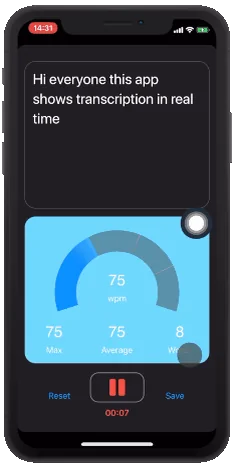

Selected work
Real problems. Shipped products. Visible change.
Taninnovate works across software, native apps, and websites — but the common thread is simpler work and clearer outcomes.
Discuss a similar project30% less project time for a construction audit workflow
20% less meeting and administration time for Toastmasters clubs
1 week to deliver a maintainable professional-services website
Salter Construction · Bespoke operational software
Material Audit
An on-site audit application that turns floor plans, material records, and photographic evidence into a usable construction report.
The friction
Site information was captured across notes, spreadsheets, and phone photos, then manually reconciled later.
What we built
A focused audit workflow for placing items on floor plans, capturing evidence, tracking progress, and generating structured outputs.
What changed
The app is used on an ongoing basis and gives the team a faster, repeatable way to complete project audits.
- 30%
- project time reduced
- 120%
- job profitability increased

Items, quantities, and evidence stay connected to the location where they were recorded.
Prime Procurement · Website strategy & build
Prime Procurement
A clear and credible digital launch for an independent energy procurement consultancy.
The brief
Translate a new consultancy’s expertise into positioning and services that business owners could understand quickly.
What we delivered
Information architecture, visual direction, responsive Framer build, domain setup, lead capture, and an ownership handover the founder can maintain.
Visit the live website“Tanin took the time to understand the business, the desired positioning, and the need for the website to feel professional, credible, and easy to navigate.”
Samuel Stevens · Founder, Prime Procurement

A distinctive visual system that turns a complex advisory service into clear customer questions and answers.
ToastHost · Community SaaS platform
ToastHost
A mobile-friendly, all-in-one meeting and club management platform built for Toastmasters communities.
The friction
Meeting agendas, role assignments, evaluations, guest follow-up, and member administration were spread across manual processes.
What we built
A connected platform for running meetings, collecting feedback, managing members, tracking progress, and reducing committee workload.
What changed
Clubs spend more meeting time on speaking and development, with less repetition and administration around each event.
- 20%
- meeting time saved
- 20%
- administration reduced

One working agenda connects assignments, timing, voting, feedback, and the final PDF.
Transcrybr · Native iPhone & iPad app
Transcrybr
Private, offline speech-to-text with real-time pace feedback, recording review, and secure export.
Designed for privacy
Speech recognition runs on-device, so transcription can work without sending sensitive audio to a remote service.
Designed for practice
Live transcription and speaking-pace feedback help people review not only what they said, but how they delivered it.
Designed for the device
Native integration supports audio uploads, Bluetooth microphones, iCloud storage, and familiar iOS sharing.

On-device transcription · Pace feedback · Private by design
More shipped work
Focused engagements can be just as valuable as full product builds.
Blackheath Advisors
A professional website for a board advisory practice, delivered in one week.
Strategy · Design · Wix build
Have a workflow that deserves this treatment?
We can start with the problem and decide together whether the answer is an app, a web platform, or something simpler.